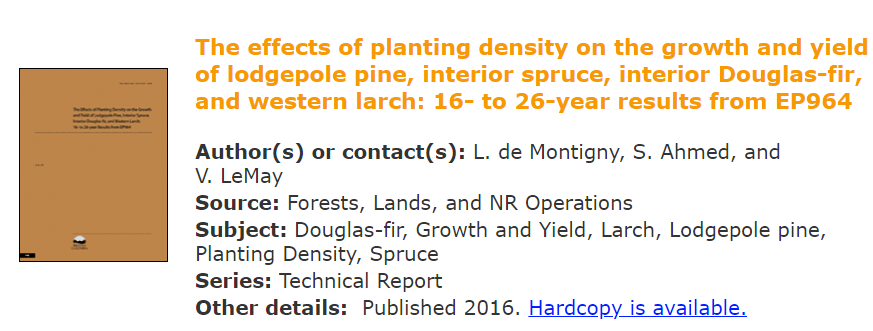

1.3 Report Writing: Technical Documents
Writing is a skill and requires learning and practice! This is especially true when it comes to technical writing, which often requires a specific structure and tone to effectively communicate complex information to a variety of audiences. Technical reports, in particular, are a common type of technical document that often require clear and concise language, logical organization, and a strong focus on the intended audience. When writing technical reports, it is important to follow the main structure or headings provided by the organization or project. It is also essential to think about the overall story you want to tell and develop each section and paragraph coherently to convey that story to your audience. Additionally, it is often best to keep each paragraph focused on one main topic or idea to avoid confusion and ensure clarity in your writing.
By implementing effective document preparation strategies, you can improve your ability to create clear and concise documents that are easy to understand and modify. These strategies can also help you to include appropriate references in your work, which will ensure that your writing is authoritative and well-supported. With practice and dedication, you can become more efficient and effective in your document preparation, resulting in high-quality documents that meet the demands of your professional or academic pursuits. Technical reports are a significant way to communicate the results of investigations, designs, or analyses on a subject or project to various audiences, such as managers, clients, or stakeholders, including the government. It is important to consider your audience when writing a technical report and to structure your document with clear headings and subheadings to ensure that your message is conveyed effectively.
By following the guidelines and best practices outlined in this document, you can learn how to use tools like Microsoft Word to create documents that are well-organized, visually appealing, and easy to navigate. The primary goal of this document is to provide learners with the skills and tools they need to prepare professional documents efficiently and in less time.
Tip
The tips and advice in this document can help you to create documents that are polished, effective, and impressive.
1.3.1 Technical Reports
Remember simple rules when writing technical documents:
- Follow the main structure (main headings) but feel free with sub-sections
- Think about a storyline and develop each section and paragraphs coherently to tell that story
- Each paragraph usually discusses one topic
Technical reports are one of the major forms of communicating the results of an investigation, design, or analysis of a subject (project). The audience for the report may be managers, clients, stakeholders such as the government.
Basic structure:
- Title page/ Cover page
- Summary (Executive summary): used for report writing
- Abstract: for scientific writing
- Table of Contents
- List of Table and Figures
- Introduction
- Methods: Middle sections with numbered headings (i.e., the body of the report)
- Conclusions
- References
- Appendices
Example Reports:
The Effects of Planting Density on the Growth and Yield of Lodgepole Pine, Interior spruce, Interior Douglas-fir, and Western Larch: 16- to 26-year results from EP964. (De Montigny et al. 2016)
1.3.2 Scientific Reports and Papers
Scientific papers are peer-reviewed and published in a journal. The format is similar to the technical report but the format is defined by the journals which vary.
Example Paper:
Meta-modeling to Quantify Yields of White Spruce and Hybrid Spruce Provenances in the Canadian Boreal Forest. (Ahmed et al. 2020)